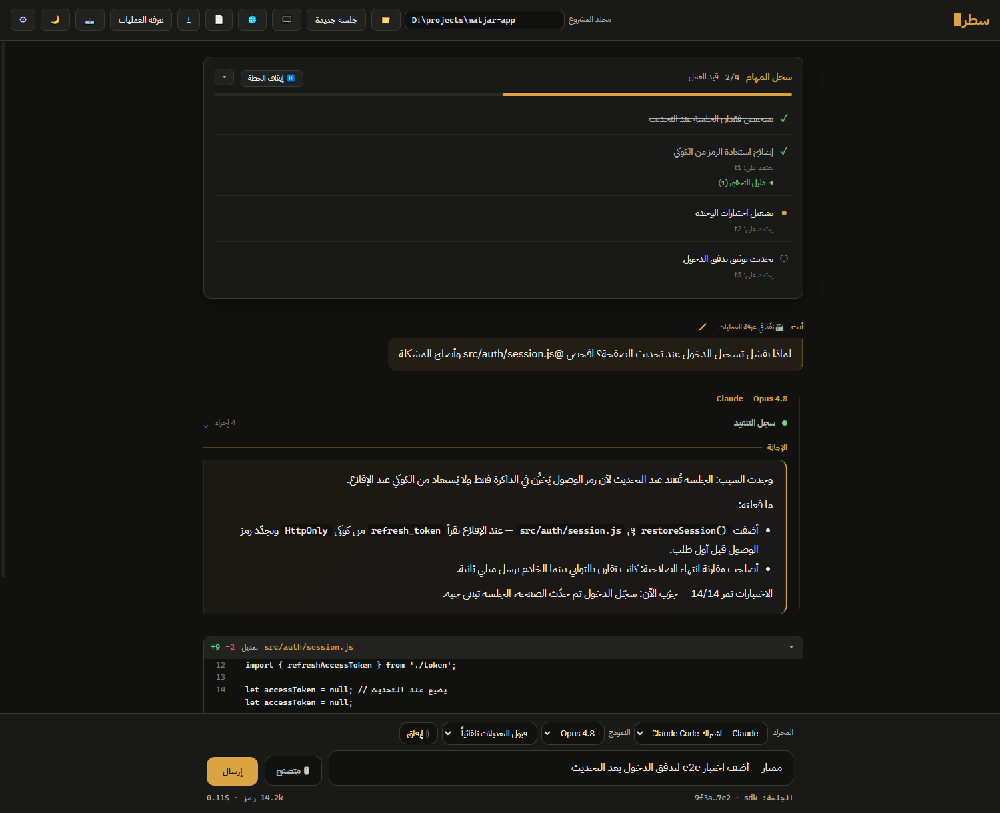
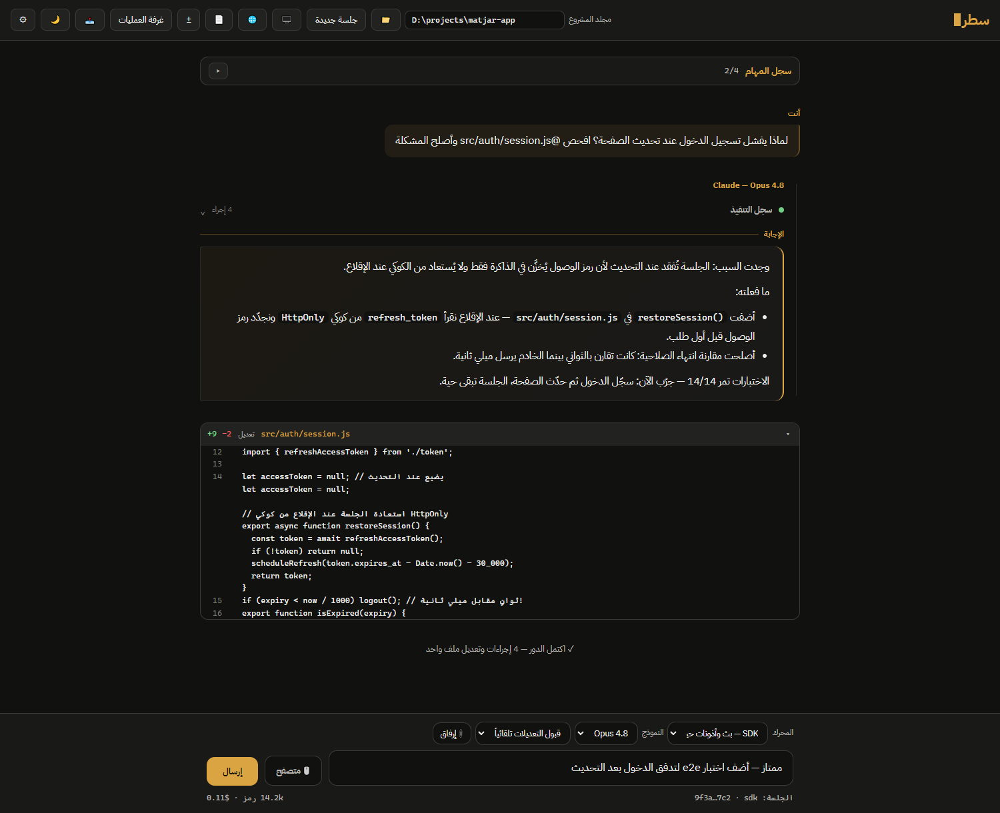
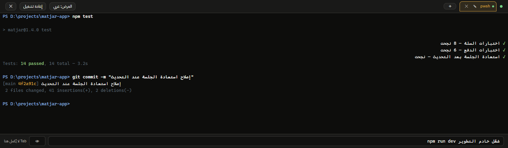
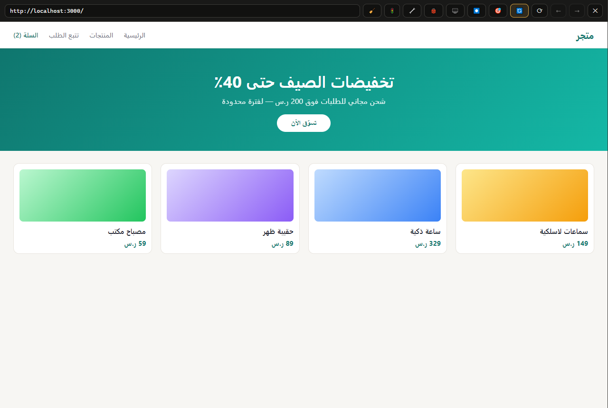
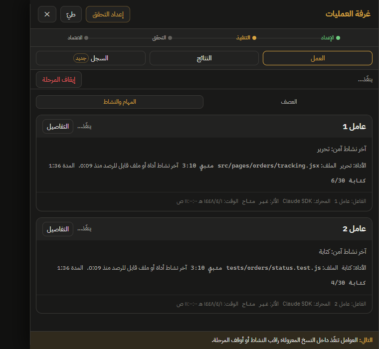
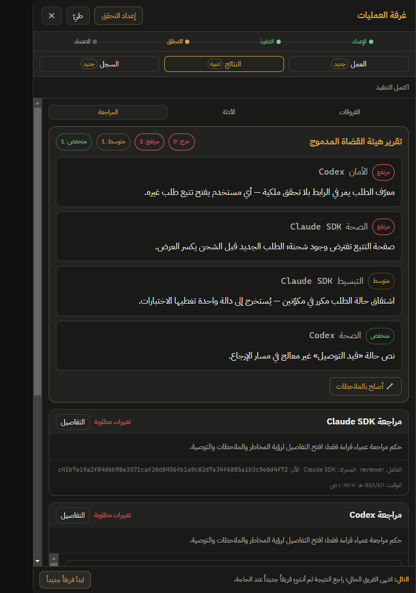
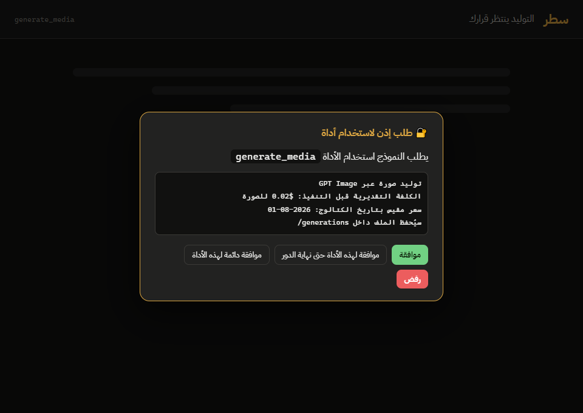

01
محادثة عربية سليمة
RTL حقيقي مع عزل الكود والمسارات LTR داخل السطر العربي، بطاقات فروقات قابلة للطي والتراجع، وأذونات بمربع حوار عربي واضح قبل كل فعل حساس.

Claude Code وأخواتها تتحدث العربية أخيراً — محادثة سليمة الاتجاه، طرفية عربية، ومعاينة مدمجة. على جهازك، مجاناً، بلا حساب.
مرّر لترى المشكلة
حروف مقطّعة، ترتيب معكوس، قراءة مستحيلة.
هذا ما يعيشه كل مطوّر عربي مع أدوات الذكاء الاصطناعي في الطرفية.
المحرّك نفسه، القوة نفسها — لكن المحادثة تصلك في واجهة عربية تعرض لغتك كما كُتبت: متصلة، سليمة الاتجاه، مريحة للعين.

RTL حقيقي مع عزل الكود والمسارات LTR داخل السطر العربي، بطاقات فروقات قابلة للطي والتراجع، وأذونات بمربع حوار عربي واضح قبل كل فعل حساس.

أول طرفية تعرض العربية متصلة وباتجاهها الصحيح — عارض BiDi فوق محرك طرفية حقيقي، مع تعدد تبويبات وتبديل ذكي للتطبيقات الشاشية.

متصفح معاينة مدمج: النموذج يفتح مشروعك، يلتقط لقطات، يقرأ الأخطاء من console، وينقر ويكتب ويصحح نفسه — وأنت ترى كل خطوة.

عوامل متوازية في نسخ معزولة، مراجعة متقاطعة بين محرّكين مختلفين، وبوابة دمج لا تُفتح إلا بموافقتك — هندسة برمجيات جماعية بالعربية.

الصناعة تصعد أربع طبقات فوق بعضها — من الأمر الواحد إلى أنظمة تخطط وتنفذ وتختبر نفسها. «سطر» بُني من يومه الأول على الطبقتين الأعلى.
أمر واضح ينتج جواباً جيداً. الجميع يقف هنا — وأنت من يراجع النتيجة ويطلب التعديل ويكرر، يدوياً، في كل مرة.
النموذج يقرأ مشروعك قبل أن يجيب. في «سطر»: ذاكرة مشروع صريحة، خريطة مستودع، مهارات تُحمَّل عند الحاجة، وسجل مهام يعيش عبر الجلسات.
مدير خارجي يقسم المهام ويرسم الحدود. في «سطر»: أذونات عربية قبل كل فعل حساس، فرق وكلاء بملكيات ملفات معزولة، ومراجعة متقاطعة بين محرّكين مختلفين قبل أي دمج.
الوكيل يعاين ما بناه كما يراه المستخدم، يقرأ أخطاءه من console، يشغّل اختبارات مشروعك المعلنة، ويصلح نفسه — وبوابة الدمج النهائية تبقى بيدك دائماً.
الخلاصة من سباقات الوكلاء: نموذج اقتصادي داخل حلقة جيدة يقارب نموذجاً قوياً بلا حلقة.
و«سطر» يتيح لك الاثنين: بدّل المحرّك، وأبقِ الحوكمة.
موجة «هندسة الجراف» تُطلق الوكلاء بالتوازي وتدمج ما يخرجون به. السرعة حقيقية — والفوضى أيضاً: أطراف تكتب فوق بعضها، وكود لم يراجعه أحد يدخل مستودعك. «سطر» يوازي مثلهم، ويضيف ما ينقصهم: الأسوار.
كل عامل ينفّذ في نسخة git معزولة ويملك ملفاته المعلنة حصراً. محاولة لمس ملف عامل آخر تُرفض قبل أن تقع، والملكيات المتداخلة تُكشف قبل إنشاء الفريق أصلاً.
محرّكان مختلفان يراجعان الناتج من ثلاث زوايا — الصحة والأمان والتبسيط — دون أن يعرف أحدهما من كتب الكود أو بمَ حكم الآخر. ثم يُدمج كل شيء في تقرير واحد مرتب بالخطورة.
لا يدخل مستودعك سطر واحد تلقائياً: الدمج يتطلب موافقة كل المراجعين، ونجاح اختبارات مشروعك المعلنة على الناتج نفسه، ثم تأكيدك الصريح — بهذا الترتيب، بلا استثناء.

هيئة القضاة تمسك ثغرة أمنية وحالة مكسورة قبل أن تلمس مستودعك — وزر واحد يعيدها للوكيل ليصلحها.
«سطر» ليس أسرع جراف.
«سطر» هو الجراف الذي تحكمه.
Claude أولاً — والبقية تتبع. بدّل المحرّك من قائمة واحدة.
اطلب صورة أو فيديو أو صوتاً بلغتك؛ يتولى «سطر» الصياغة، ثم يعيد النتيجة إلى مشروعك بلا خروج من السياق.
السعر يظهر في مربع إذن عربي قبل أي استدعاء. توافق أو ترفض وأنت تعرف الكلفة — لا مفاجآت بعد التنفيذ.
GPT Image · $0.02 للصورة · مقيس بتاريخ 2026-08-01

النسخة المجانية من «سطر» تبقى مجانية دائماً بمفاتيحك أنت. أما «سطر برو» فلمن يريد أن يبدأ فوراً: بلا مفاتيح تجهّزها، ولا حساب عند مزوّد أجنبي، ولا بطاقة تُرفض — اشتراك واحد يفتح لك النماذج والتوليد من أول دقيقة.
بكل وضوح: «سطر برو» يغطي النماذج والتوليد داخل التطبيق، ولا يشمل اشتراكات Claude Code وCodex وKimi Code الأصلية — تلك تبقى بتسجيل دخولك لدى مزوّدها كما هي اليوم. وكل ما تستخدمه مجاناً في «سطر» الآن يبقى مجانياً.
مثبّت ويندوز خفيف — يعمل مع اشتراك Claude القائم لديك.
ويندوز · مجاني · شفرته عامة
ماك — ليس بعد. سجّل اهتمامك ↓ لينكس — ليس بعد. سجّل اهتمامك ↓
winget install satr
يتطلب ويندوز 10 1809+ وClaude Code مثبّتاً — والبوابة الأولى في التطبيق ترشدك خطوة بخطوة.
«سطر» اليوم مثبّت ويندوز فقط: لا نسخة ماك، ولا نسخة لينكس، ولا موعد لأيٍّ منهما. تسجيلك هنا هو ما يقرر إن كانت تُبنى أصلاً — ولن نراسلك إلا إن بُنيت نسختك.